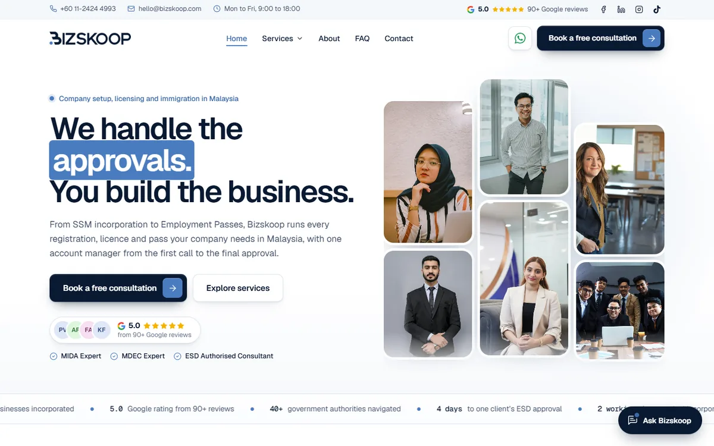
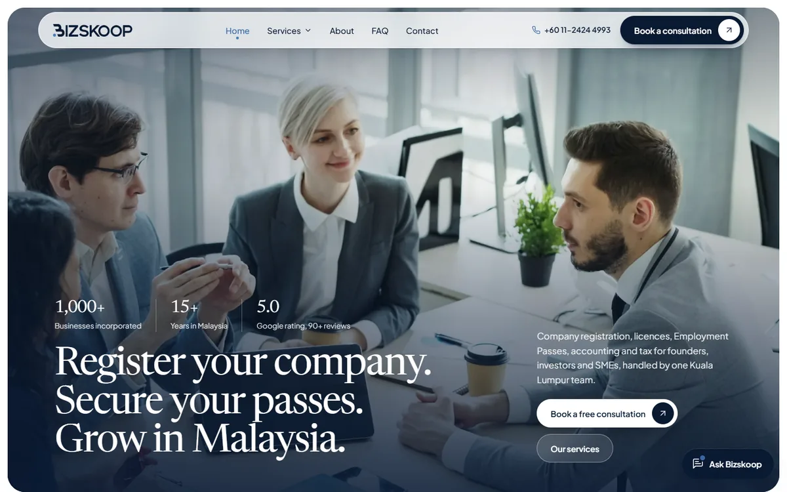

Concept A, all sans-serif
Clear Path
Editorial and structured, like a well-run consultancy. Modelled on Agevia, in Bizskoop navy and blue, set in Geist.
- A wall of questions clients ask, answered by the assistant on a tap
- Service cards that stack as you scroll, turning from blue to full colour
- A four-step process arc and a side-by-side comparison

Concept B, serif headings
Gateway
Calm, premium and photo-led. Modelled on GrowFast, with Newsreader headings and Plus Jakarta Sans text.
- A turning globe with arcs from clients’ home countries into Kuala Lumpur
- “Where are you in your Malaysia journey?” path cards and service tabs
- A statement that fills in as you read, a bento grid and a review carousel